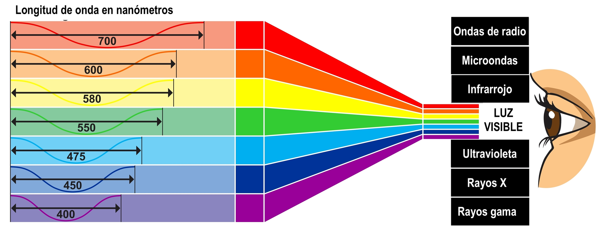

¿Qué es el sensor de color?
El sensor de color, en nuestro caso el sensor de color ref.: TCS3200, es un dispositivo electrónico que se utiliza para detectar y cuantificar la intensidad de luz en diferentes frecuencias del espectro de color. Este sensor es particularmente eficaz en aplicaciones donde es necesario identificar y distinguir colores de manera precisa.
Analogia entre el funcionamiento del ojo humano y el sensor de color.
El espectro visible es la porción del espectro electromagnético que el ojo humano es capaz de percibir. Esta franja de radiación electromagnética abarca longitudes de onda que van aproximadamente desde 380 a 750 nanómetros. Dentro de este rango, la luz se percibe como diferentes colores. La secuencia típica de colores en el espectro visible es rojo, naranja, amarillo, verde, azul y violeta.
Cuando la luz blanca (que contiene todas las longitudes de onda en el espectro visible) atraviesa un prisma o se dispersa de alguna manera, se divide en sus componentes de color, revelando así la gama completa del espectro visible. Esto es conocido como dispersión de la luz y fue estudiado por Sir Isaac Newton.
Es importante destacar que el ojo humano es más sensible a las longitudes de onda en la región del verde y amarillo, lo que tiene implicaciones en la forma en que percibimos los colores y en la tecnología de captura de imágenes, como en las cámaras fotográficas.

De esta manera podemos entender el funcionamiento del sensor de color conociendo de antemano como nuestros ojos distinguen entre cada uno de los colores, dicho punto de comparación radica en la capacidad para percibir y distinguir colores en el espectro visible. Así como el ojo humano utiliza células especializadas llamadas conos para detectar longitudes de onda específicas y generar la experiencia visual del color, el sensor de color TCS3200 utiliza fotodiodos con filtros de color para convertir la luz en señales eléctricas que representan las distintas longitudes de onda en el espectro de color. Ambos sistemas permiten la interpretación de la información cromática, demostrando cómo la tecnología puede imitar y mejorar funciones biológicas esenciales.